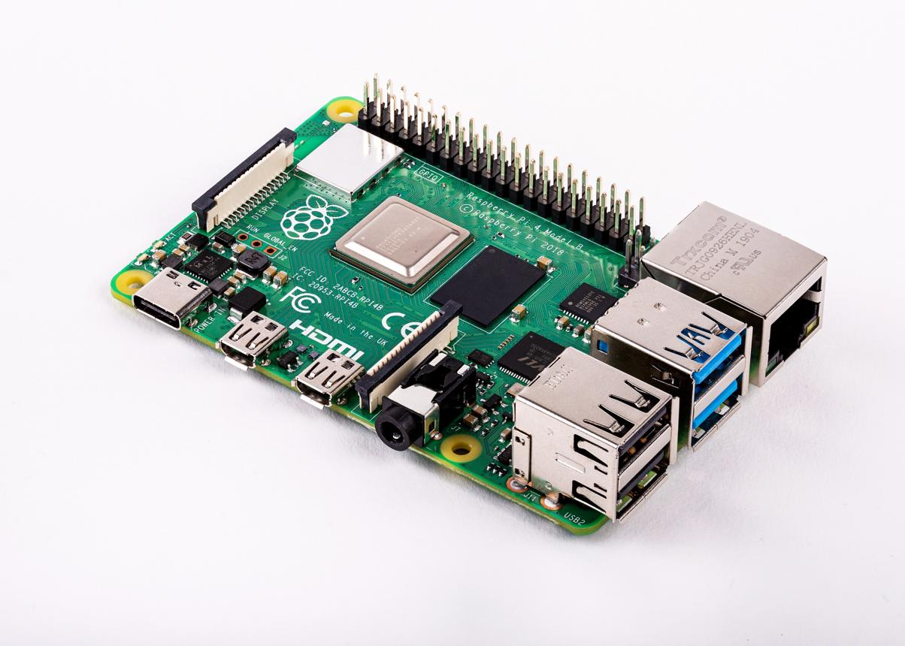
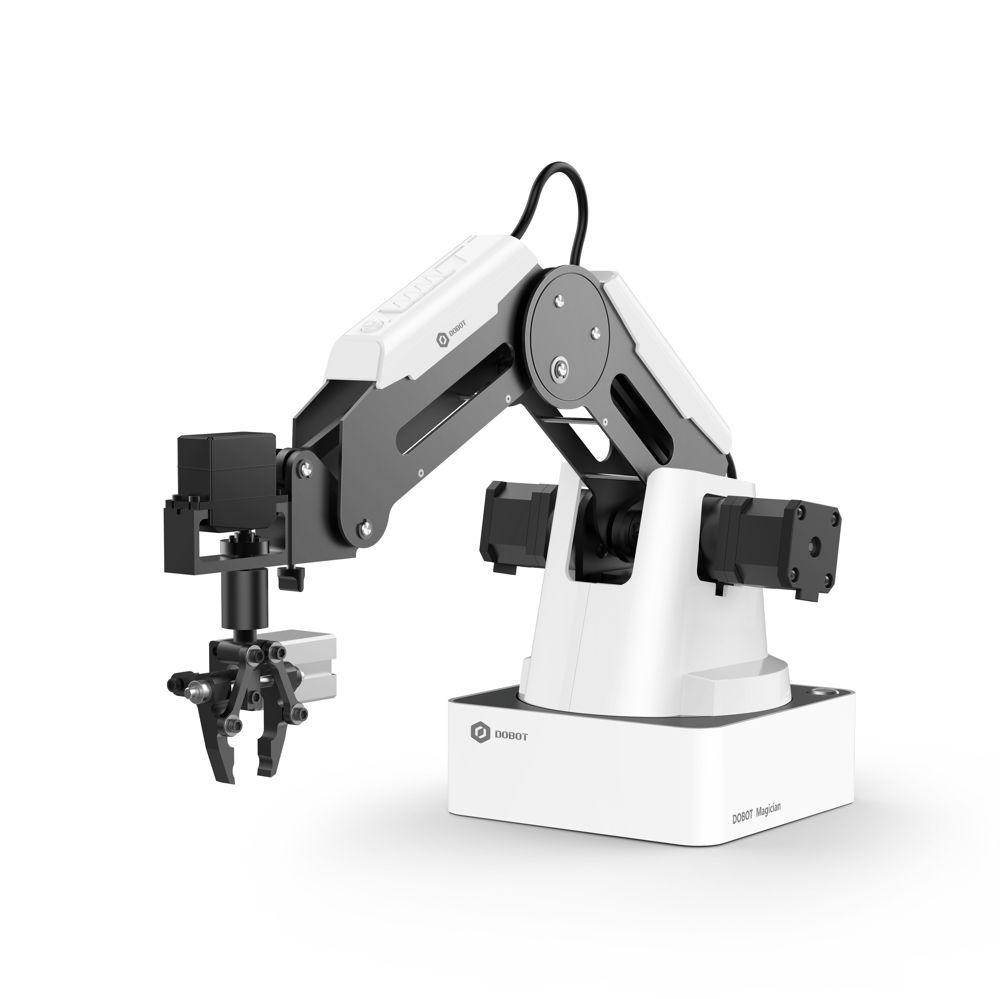
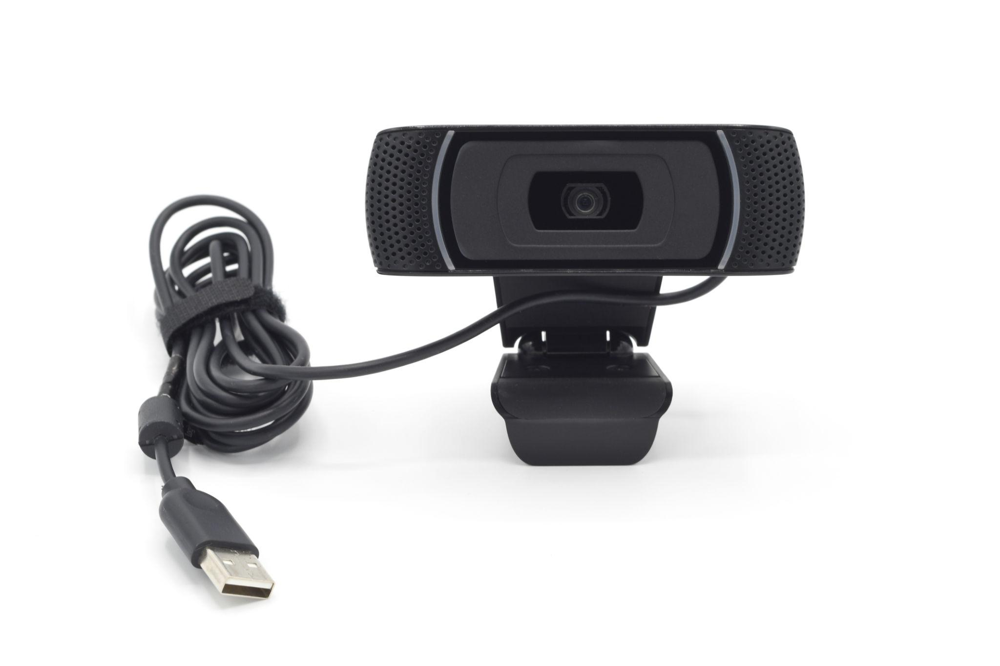
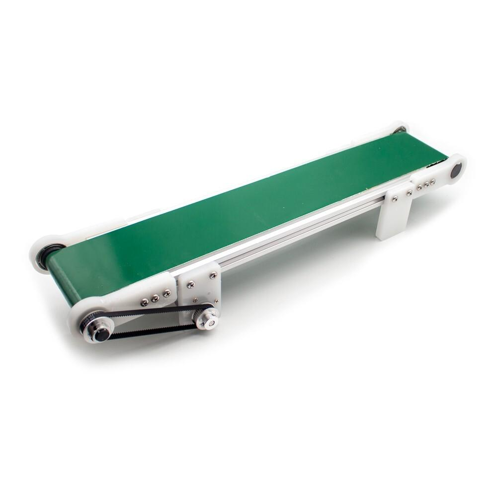
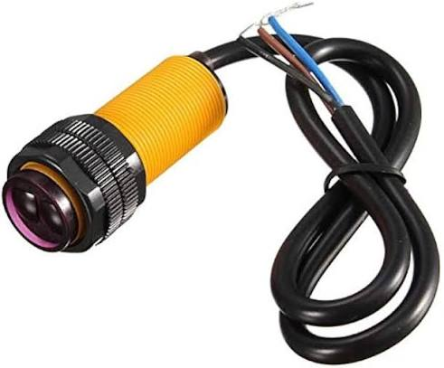
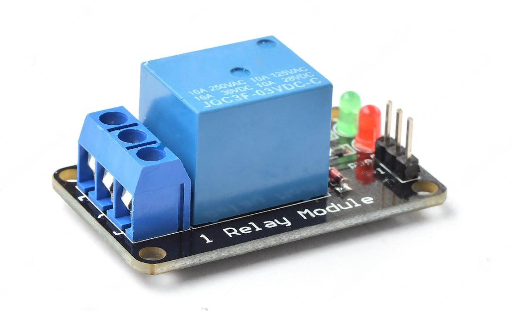
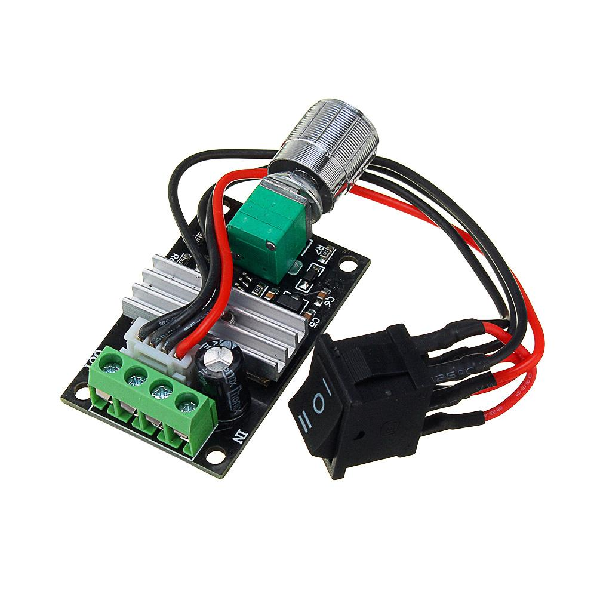
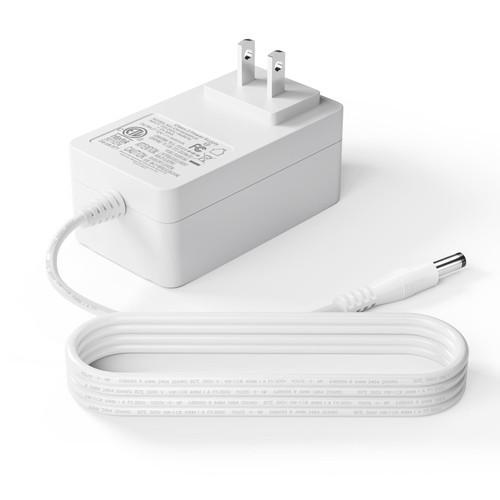
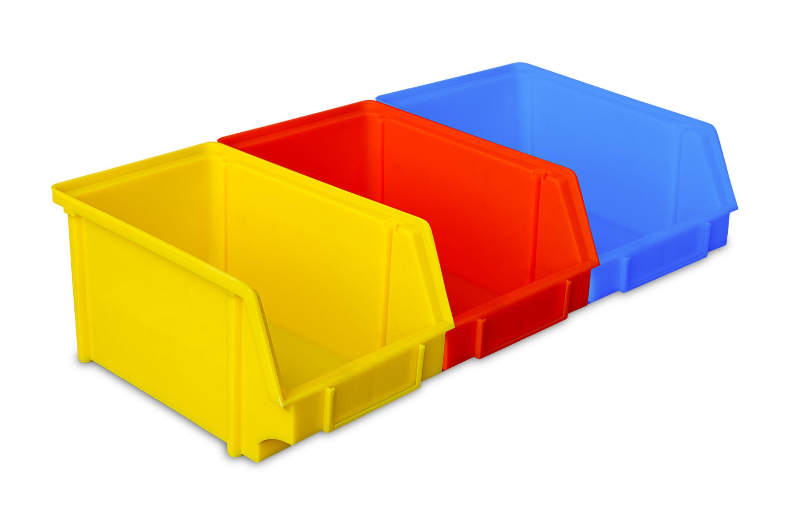

AI Based Color Sorting System
AI-powered automatic color sorting system using Raspberry Pi 4, OpenCV, USB Camera, Conveyor Belt, Proxy Sensor, Relay Module and Dobot Magician Robot.
AI-powered automatic color sorting system using Raspberry Pi 4, OpenCV, USB Camera, Conveyor Belt, Proxy Sensor, Relay Module and Dobot Magician Robot.
Project Name : AI Based Color Sorting System
Main Controller : Raspberry Pi 4 Model B
Programming Language : Python 3
Vision : USB HD Camera + OpenCV
Robot : Dobot Magician
Conveyor : DC Conveyor Belt
Sensor : Infrared Proxy Sensor
Motor Driver : Relay + PWM Controller
Purpose : Automatically detect object color, stop the conveyor, pick the object using Dobot, and place it into the correct color bin.

Main controller that performs image processing and controls the complete system.

Industrial robotic arm used for automatic pick and place operation.

Captures images of the object for OpenCV color detection.

Moves the object automatically toward the robot.

Detects object arrival and stops the conveyor.

Controls ON/OFF operation of the conveyor motor.

Controls conveyor speed.

Provides stable power to Raspberry Pi and conveyor.

Separate bins for Red, Blue and Yellow objects.
| Software | Version | Purpose |
|---|---|---|
| Raspberry Pi OS | Latest | Operating System |
| Python 3 | 3.x | Main Programming Language |
| OpenCV | Latest | Computer Vision |
| NumPy | Latest | Array Processing |
| PySerial | Latest | Dobot Communication |
| PyDobot | Latest | Dobot Control Library |
| RPi.GPIO | Latest | GPIO Control |
| VS Code | Latest | Python Development |
Complete all wiring before powering ON the system.
| Connection | Details |
|---|---|
| Relay VCC | Raspberry Pi 3.3V |
| Relay GND | Raspberry Pi GND |
| Relay Signal | Raspberry Pi GPIO17 |
| Proxy Sensor Signal | Raspberry Pi GPIO23 |
| Proxy Sensor VCC | Raspberry Pi 5V |
| Proxy Sensor GND | Raspberry Pi GND |
| USB Camera | Raspberry Pi USB Port |
| Dobot Magician USB | Raspberry Pi USB Port |
| Relay COM | PWM Controller Power (+) |
| Relay NC | 12V Positive Supply |
| PWM Output | DC Conveyor Motor |
Add your complete wiring diagram below.

The AI Based Color Sorting System automates the identification and sorting of colored objects using Computer Vision and a robotic arm. The Raspberry Pi continuously captures images from the USB camera. Whenever the proximity sensor detects an object, the conveyor stops automatically. The captured image is processed using OpenCV. The detected object color determines the destination bin. The Raspberry Pi sends the corresponding coordinates to the Dobot Magician. The robot picks the object and places it in the correct sorting bin. Finally, the conveyor starts again and waits for the next object.
The system uses OpenCV to convert the captured image from BGR to HSV color space. HSV makes color detection more reliable under different lighting conditions. Threshold values are created for each color. Contours are detected. The largest contour is selected. The center of the contour is calculated. The object color is identified and sent to the robot.
The conveyor runs continuously. When the IR proximity sensor detects an object, GPIO output turns OFF the relay. The conveyor immediately stops. After sorting is completed, the relay turns ON again and the conveyor continues. PWM can be adjusted to control conveyor speed.
import argparse
import os
import json
import time
import threading
import glob
import cv2
import numpy as np
import RPi.GPIO as GPIO
from pydobot import Dobot
RELAY_PIN = 17
PROXY_PIN = 23 # Change using --proxy-pin if you wire the sensor to another GPIO
PROXY_ACTIVE_LOW = True # E18-D80NK NPN is usually LOW when object is detected
CONFIG_FILE = "dobot_coords.json"
PICK_SAFE_Z_OFFSET = 100
PLACE_Z = None
CONVEYOR_MAX = 10.0 # Safety cutoff if proxy sensor does not detect the block
PROXY_STABLE_READS = 3
PROXY_STABLE_DELAY = 0.02
DETECTION_THRESHOLD = 1500
MIN_CONTOUR_AREA = 1200
STABLE_FRAMES_REQUIRED = 5
GONE_FRAMES_REQUIRED = 8
LOWER_RED1 = np.array([0, 120, 80])
UPPER_RED1 = np.array([10, 255, 255])
LOWER_RED2 = np.array([170, 120, 80])
UPPER_RED2 = np.array([180, 255, 255])
LOWER_BLUE = np.array([90, 90, 70])
UPPER_BLUE = np.array([135, 255, 255])
# Tightened yellow range to avoid hand and light reflection
LOWER_YELLOW = np.array([22, 110, 100])
UPPER_YELLOW = np.array([40, 255, 255])
red_count = 0
blue_count = 0
yellow_count = 0
last_counted_color = None
_relay_timer = None
_relay_lock = threading.Lock()
def find_dobot_port():
ports = glob.glob("/dev/ttyUSB*") + glob.glob("/dev/ttyACM*")
return ports[0] if ports else None
def _hard_cutoff():
with _relay_lock:
GPIO.output(RELAY_PIN, GPIO.LOW)
print("[CONVEYOR] OFF - safety cutoff")
def conveyor_on():
global _relay_timer
with _relay_lock:
if _relay_timer:
_relay_timer.cancel()
GPIO.output(RELAY_PIN, GPIO.HIGH)
_relay_timer = threading.Timer(CONVEYOR_MAX, _hard_cutoff)
_relay_timer.daemon = True
_relay_timer.start()
print("[CONVEYOR] ON")
def conveyor_off():
global _relay_timer
with _relay_lock:
if _relay_timer:
_relay_timer.cancel()
_relay_timer = None
GPIO.output(RELAY_PIN, GPIO.LOW)
print("[CONVEYOR] OFF")
def setup_gpio(proxy_pin):
GPIO.setwarnings(False)
GPIO.setmode(GPIO.BCM)
GPIO.setup(RELAY_PIN, GPIO.OUT)
GPIO.output(RELAY_PIN, GPIO.LOW)
# E18-D80NK NPN sensor wiring usually needs pull-up on the Pi input.
# Brown: sensor VCC, Blue: sensor GND, Black: signal to this GPIO.
GPIO.setup(proxy_pin, GPIO.IN, pull_up_down=GPIO.PUD_UP)
def is_proxy_detected(proxy_pin, active_low=True):
value = GPIO.input(proxy_pin)
detected = (value == GPIO.LOW) if active_low else (value == GPIO.HIGH)
return detected
def is_proxy_detected_stable(proxy_pin, active_low=True):
for _ in range(PROXY_STABLE_READS):
if not is_proxy_detected(proxy_pin, active_low):
return False
time.sleep(PROXY_STABLE_DELAY)
return True
def cleanup_gpio():
conveyor_off()
GPIO.cleanup()
def init_camera(index=-1):
camera_indexes = [index] if index >= 0 else [0, 1, 2, 3, 4, 5]
for i in camera_indexes:
cam = cv2.VideoCapture(i)
cam.set(cv2.CAP_PROP_FRAME_WIDTH, 640)
cam.set(cv2.CAP_PROP_FRAME_HEIGHT, 480)
cam.set(cv2.CAP_PROP_BUFFERSIZE, 1)
if not cam.isOpened():
cam.release()
continue
ok, frame = cam.read()
if ok and frame is not None:
print("[CAMERA] Using camera index", i)
return cam
cam.release()
raise RuntimeError("No working camera found")
def get_frame(cam):
ok, frame = cam.read()
return frame if ok else None
def draw_dashboard(frame, state, color, scores):
global red_count, blue_count, yellow_count
x, y = 35, 35
w, h = 270, 205
cv2.rectangle(frame, (x, y), (x + w, y + h), (245, 245, 245), -1)
cv2.rectangle(frame, (x, y), (x + w, y + h), (220, 220, 220), 2)
cv2.rectangle(frame, (x + 12, y + 12), (x + 44, y + 44), (210, 90, 20), -1)
cv2.putText(frame, "III", (x + 17, y + 36),
cv2.FONT_HERSHEY_SIMPLEX, 0.55, (255, 255, 255), 2)
cv2.putText(frame, "No. of Blocks", (x + 58, y + 36),
cv2.FONT_HERSHEY_SIMPLEX, 0.72, (0, 0, 0), 2)
start_y = y + 60
row_h = 38
col_icon = x + 35
col_name = x + 65
col_count = x + 200
table_right = x + w - 12
cv2.rectangle(frame, (x + 12, start_y), (table_right, start_y + row_h * 3),
(210, 210, 210), 1)
cv2.line(frame, (col_count - 20, start_y),
(col_count - 20, start_y + row_h * 3), (210, 210, 210), 1)
for i in range(1, 3):
yy = start_y + i * row_h
cv2.line(frame, (x + 12, yy), (table_right, yy), (210, 210, 210), 1)
cv2.circle(frame, (col_icon, start_y + 24), 12, (0, 0, 255), -1)
cv2.putText(frame, "Red", (col_name, start_y + 30),
cv2.FONT_HERSHEY_SIMPLEX, 0.62, (0, 0, 0), 2)
cv2.putText(frame, str(red_count), (col_count, start_y + 30),
cv2.FONT_HERSHEY_SIMPLEX, 0.68, (0, 0, 0), 2)
cv2.circle(frame, (col_icon, start_y + row_h + 24), 12, (255, 0, 0), -1)
cv2.putText(frame, "Blue", (col_name, start_y + row_h + 30),
cv2.FONT_HERSHEY_SIMPLEX, 0.62, (0, 0, 0), 2)
cv2.putText(frame, str(blue_count), (col_count, start_y + row_h + 30),
cv2.FONT_HERSHEY_SIMPLEX, 0.68, (0, 0, 0), 2)
cv2.circle(frame, (col_icon, start_y + row_h * 2 + 24), 12, (0, 255, 255), -1)
cv2.putText(frame, "Yellow", (col_name, start_y + row_h * 2 + 30),
cv2.FONT_HERSHEY_SIMPLEX, 0.62, (0, 0, 0), 2)
cv2.putText(frame, str(yellow_count), (col_count, start_y + row_h * 2 + 30),
cv2.FONT_HERSHEY_SIMPLEX, 0.68, (0, 0, 0), 2)
cv2.putText(frame, f"State: {state} Color: {color}",
(15, frame.shape[0] - 42),
cv2.FONT_HERSHEY_SIMPLEX, 0.55, (255, 255, 255), 2)
cv2.putText(frame, f"R:{scores['Red']} B:{scores['Blue']} Y:{scores['Yellow']}",
(15, frame.shape[0] - 18),
cv2.FONT_HERSHEY_SIMPLEX, 0.55, (255, 255, 255), 2)
return frame
def update_count(color):
global red_count, blue_count, yellow_count, last_counted_color
if color is None or color == last_counted_color:
return
if color == "Red":
red_count += 1
elif color == "Blue":
blue_count += 1
elif color == "Yellow":
yellow_count += 1
last_counted_color = color
def clean_mask(mask):
kernel = np.ones((5, 5), np.uint8)
mask = cv2.morphologyEx(mask, cv2.MORPH_OPEN, kernel)
mask = cv2.morphologyEx(mask, cv2.MORPH_CLOSE, kernel)
return mask
def valid_mask_score(mask):
mask = clean_mask(mask)
score = cv2.countNonZero(mask)
contours, _ = cv2.findContours(mask, cv2.RETR_EXTERNAL, cv2.CHAIN_APPROX_SIMPLE)
if not contours:
return 0, 0
largest = max(contours, key=cv2.contourArea)
area = cv2.contourArea(largest)
if score < DETECTION_THRESHOLD:
return score, area
if area < MIN_CONTOUR_AREA:
return score, area
return score, area
def detect_color(roi):
hsv = cv2.cvtColor(roi, cv2.COLOR_BGR2HSV)
# Reject bright white glare/reflection
saturation = hsv[:, :, 1]
value = hsv[:, :, 2]
glare_mask = cv2.inRange(saturation, 0, 80)
bright_mask = cv2.inRange(value, 210, 255)
glare = cv2.bitwise_and(glare_mask, bright_mask)
mask_r = cv2.bitwise_or(
cv2.inRange(hsv, LOWER_RED1, UPPER_RED1),
cv2.inRange(hsv, LOWER_RED2, UPPER_RED2)
)
mask_b = cv2.inRange(hsv, LOWER_BLUE, UPPER_BLUE)
mask_y = cv2.inRange(hsv, LOWER_YELLOW, UPPER_YELLOW)
# Remove reflection pixels from yellow
mask_y = cv2.bitwise_and(mask_y, cv2.bitwise_not(glare))
r_score, r_area = valid_mask_score(mask_r)
b_score, b_area = valid_mask_score(mask_b)
y_score, y_area = valid_mask_score(mask_y)
scores = {
"Red": r_score,
"Blue": b_score,
"Yellow": y_score
}
areas = {
"Red": r_area,
"Blue": b_area,
"Yellow": y_area
}
best = max(scores, key=scores.get)
if scores[best] >= DETECTION_THRESHOLD and areas[best] >= MIN_CONTOUR_AREA:
return best, scores
return None, scores
def move_to(device, x, y, z, r=0):
device.move_to(x, y, z, r, wait=True)
time.sleep(0.3)
def pick_and_place(device, coords, color):
bin_map = {
"Red": "BIN_RED",
"Blue": "BIN_BLUE",
"Yellow": "BIN_YELLOW"
}
bin_key = bin_map[color]
print(f"[ROBOT] {color} block -> {bin_key}")
if bin_key not in coords:
print("[ERROR] Missing calibration for", bin_key)
return
pick = coords["PICK"]
safe_z = pick["z"] + PICK_SAFE_Z_OFFSET
move_to(device, pick["x"], pick["y"], safe_z)
move_to(device, pick["x"], pick["y"], pick["z"])
device.suck(True)
time.sleep(0.5)
move_to(device, pick["x"], pick["y"], safe_z)
b = coords[bin_key]
target_z = PLACE_Z if PLACE_Z else b["z"]
move_to(device, b["x"], b["y"], safe_z)
move_to(device, b["x"], b["y"], target_z)
device.suck(False)
time.sleep(0.5)
move_to(device, pick["x"], pick["y"], safe_z)
print(f"[ROBOT] Placed {color} block in {bin_key}")
def calibrate(device):
print("\n[CALIBRATION MODE]")
coords = {}
for key in ["PICK", "BIN_RED", "BIN_BLUE", "BIN_YELLOW"]:
input(f"Move robot to {key}, then press ENTER...")
pose = device.pose()
coords[key] = {
"x": round(pose[0], 2),
"y": round(pose[1], 2),
"z": round(pose[2], 2),
"r": round(pose[3], 2),
}
print("[SAVED]", key, coords[key])
with open(CONFIG_FILE, "w") as f:
json.dump(coords, f, indent=4)
print("[CALIBRATION] Saved")
return coords
def main():
global last_counted_color
parser = argparse.ArgumentParser()
parser.add_argument("--camera-index", type=int, default=-1)
parser.add_argument("--proxy-pin", type=int, default=PROXY_PIN,
help="BCM GPIO pin connected to E18-D80NK black signal wire")
parser.add_argument("--proxy-active-high", action="store_true",
help="Use this only if your proxy sensor gives HIGH when object is detected")
parser.add_argument("--calibrate", action="store_true")
args = parser.parse_args()
print("[INIT] Starting")
device = None
for _ in range(10):
port = find_dobot_port()
if port:
try:
device = Dobot(port=port, verbose=False)
print("[DOBOT] Connected on", port)
break
except Exception:
pass
time.sleep(2)
if device is None:
raise RuntimeError("Dobot not found")
if args.calibrate or not os.path.exists(CONFIG_FILE):
coords = calibrate(device)
else:
with open(CONFIG_FILE, "r") as f:
coords = json.load(f)
print("[CALIBRATION] Loaded")
required_keys = ["PICK", "BIN_RED", "BIN_BLUE", "BIN_YELLOW"]
missing = [key for key in required_keys if key not in coords]
if missing:
print("[ERROR] Missing calibration:", missing)
print("Run: python robo1.py --calibrate")
device.close()
return
proxy_active_low = not args.proxy_active_high
setup_gpio(args.proxy_pin)
print("[PROXY] GPIO", args.proxy_pin, "active", "LOW" if proxy_active_low else "HIGH")
cam = init_camera(args.camera_index)
state = "IDLE"
detected = None
start_time = None
stable_color = None
stable_count = 0
gone_count = 0
last_printed_detection = None
cv2.namedWindow("Fruit Detection", cv2.WINDOW_NORMAL)
try:
while True:
frame = get_frame(cam)
if frame is None:
continue
h, w, _ = frame.shape
roi_x1 = w // 5
roi_y1 = h // 4
roi_x2 = 4 * w // 5
roi_y2 = 4 * h // 5
roi = frame[roi_y1:roi_y2, roi_x1:roi_x2]
color, scores = detect_color(roi)
if color == stable_color and color is not None:
stable_count += 1
elif color is not None:
stable_color = color
stable_count = 1
else:
stable_color = None
stable_count = 0
cv2.rectangle(frame, (roi_x1, roi_y1), (roi_x2, roi_y2), (0, 255, 0), 2)
cv2.putText(frame, f"Detected: {color}",
(roi_x1, roi_y1 - 10),
cv2.FONT_HERSHEY_SIMPLEX, 0.7,
(0, 255, 0), 2)
frame = draw_dashboard(frame, state, color, scores)
cv2.imshow("Fruit Detection", frame)
key = cv2.waitKey(1) & 0xFF
if key == ord("q"):
print("[STOP] Q pressed")
break
if state == "IDLE":
if stable_color and stable_count >= STABLE_FRAMES_REQUIRED:
detected = stable_color
if detected != last_printed_detection:
print(f"[DETECTED] {detected} block")
last_printed_detection = detected
update_count(detected)
conveyor_on()
start_time = time.time()
state = "RUN"
stable_color = None
stable_count = 0
elif state == "RUN":
# Conveyor keeps moving until the proxy sensor confirms
# the block has reached the pickup position.
if is_proxy_detected_stable(args.proxy_pin, proxy_active_low):
print("[PROXY] Block detected at pickup position")
conveyor_off()
if detected:
pick_and_place(device, coords, detected)
detected = None
gone_count = 0
state = "WAIT"
# Safety fallback: stop conveyor if sensor/cable fails.
elif time.time() - start_time >= CONVEYOR_MAX:
conveyor_off()
print("[ERROR] Proxy not detected before safety timeout")
detected = None
gone_count = 0
state = "WAIT"
elif state == "WAIT":
if color is None:
gone_count += 1
else:
gone_count = 0
if gone_count >= GONE_FRAMES_REQUIRED:
last_counted_color = None
last_printed_detection = None
gone_count = 0
state = "IDLE"
time.sleep(0.05)
except KeyboardInterrupt:
print("[STOP] User stopped")
finally:
cam.release()
device.close()
cleanup_gpio()
cv2.destroyAllWindows()
print("[EXIT] Clean shutdown")
if __name__ == "__main__":
main()
Automatic sorting of products in production lines.
Sorting products before packaging.
Sorting fruits and vegetables based on color.
Medicine bottle identification and sorting.
Automatic waste segregation using vision.
Learning Computer Vision and Industrial Automation.